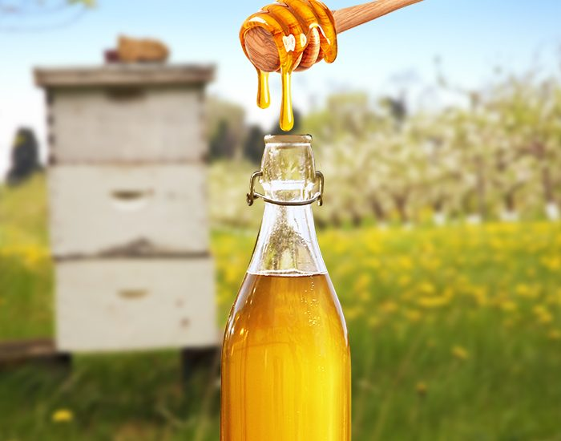
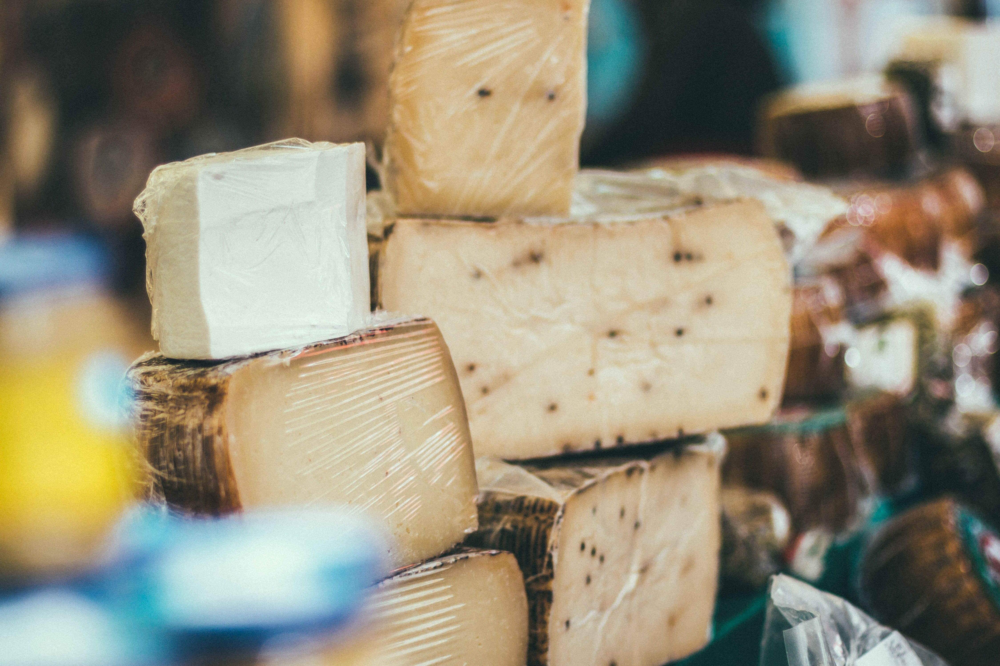

"El curso presenta las técnicas más adecuadas con métodos enológicos en el procedimiento de elaboración con el objetivo de alcanzar los mayores estándares de calidad y características organolépticas óptimas y constante en el producto final. s insumos enológicos utilizados y con el método de no calentamiento de la miel, se logra un producto diferente de excelente calidad y con el grado alcohólico deseado, siempre de acuerdo a las normas del Código Alimentario Argentino. "
"Aprenderá hacer quesos conbinando los métodos artesanales e industriales logrando un buen producto final para consumo propio o realizar un emprendimiento. Estableciendo las Buenas Prácticas de Elaboración en todo el proceso con el objetivo de mejorar, estandarizar la calidad e inocuidad de los quesos elaborados. Las diferentes unidades contaran con un abordaje de material de apoyo en PDF con documentos de lectura y fotografías ilustrativas de aplicación práctica y videos para transmitir al alumno conceptos importante desde la pasteurización de la leche al envasado del producto final. Durante el curso el alumno podrá realizar las consultas para generar un rico intercambio de experiencias y evacuar sus dudas."
" Aprenderá hacer quesos siguiendo los métodos artesanales e industriales logrando un buen producto final para consumo propio o realizar un emprendimiento. Estableciendo las Buenas Prácticas de Elaboración en todo el proceso con el objetivo de mejorar, estandarizar la calidad e inocuidad de los quesos elaborados. Las diferentes unidades contaran con un abordaje de material de apoyo en PDF con documentos de lectura y fotografías ilustrativas de aplicación práctica y videos para transmitir al alumno conceptos importante desde la pasteurización de la leche al envasado del producto final. Durante el curso el alumno podrá realizar las consultas para generar un rico intercambio de experiencias y evacuar sus dudas."

Licenciada en Bromatología y Bromatóloga (Universidad Nacional de Cuyo).
Managment en Empresa Agricola (Prosca Italia).
Gestión e Internacionalización de las Empresas. Desarrollo Empresarial.
Experta en Sistemas de Aseguramiento de la Calidad. HACCP (U. Pardue EEUU).
Managment en Gestión de la Calidad. DGQ Alemania.
Docente Sistema e-Learning, desde 2008 en diferentes cursos agroalimentarios y bebidas fermentadas.